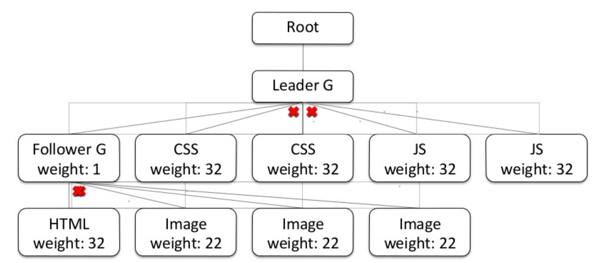

HTTP/2
What's new?
Meetup Webperf Paris - Mars 2017
@stefounet #webperf
Qui suis-je ?

- ZX Spectrum en 1982, VIC20, C64, consoles, etc ...
- première page HTML en 1994 (NCSA Mosaic)
- Webnet (“webagency”) en 1996
- RueDuCommerce en 2000
- Fasterize en 2011
Qui est Fasterize ?
- Startup créée en 2011
- FEO en SaaS
- Audits Webperf
- 150 sites
Intro
(c'est quoi HTTP/2 ?)
La suite de HTTP/1.1
- Même sémantique
La suite de HTTP/1.1
- Même sémantique
- Protocole binaire
- Une seule connexion TCP
- Plusieurs requêtes en parallèle (streams)
- Compression des headers HTTP (HPACK)
- Priorisation des streams (HTML vs CSS vs JS vs IMG)
- Server push
Impact sur le waterfall

Impact sur les règles actuelles
- Make Fewer HTTP Requests
- Use a Content Delivery Network
- Add an Expires Header
- Gzip Components
- Put Stylesheets at the Top
- Put Scripts at the Bottom
- Avoid CSS Expressions
- Make JavaScript and CSS External
- Reduce DNS Lookups
- Minify JavaScript
- Avoid Redirects
- Remove Duplicate Scripts
- Configure ETags
- Make AJAX Cacheable

- Ajax
- Responsive Web
- Split initial payload
- Defer JS (non blocking, async)
- Inline scripts position
- Minify HTML
- Optimize images
- Sharding
- Flush the document early
- Use iFrame sparingly
- Simplify CSS selectors
- latence
- TCP (handshake, slow start)
- limites des navigateurs
- HTTP1.1
- im-mobile
Ce qu'il faut changer
(à priori)
- Concaténation
- Sharding
- Cookie-less domain
- Critical CSS inlining / preloading
Concaténation
- Avantages
- ?
- Inconvénients
- process de build / maintenance
- démarrage du parsing et de l'exécution plus tard
- pas d'optimisation du cache entre les pages
- Cool alors !?
Concaténation
- Taux de compression des petits fichiers
- Améliorations possibles
- SDCH
- compression dictionaries (draft)
Sharding & cookie-less domain
- Avantages
- mise en place CDN pour les statiques
- cookie-less domain
- Inconvénients
- ajoute des résolutions DNS
- ajoute des nouvelles connexions TCP/TLS
- ajoute des certificats
- combien de domaines ?
- Cool alors !?
Sharding & Cookie-less domain
- Full-site CDN
- Améliorations possibles
- éléments critiques sur le même domaine (CSS, JS non différé)
- le reste sur un sous-domaine CDN en HTTP2 avec le même certificat
Critical inlining / Preload
- Avantages
- efficace !
- Inconvénients
- process de build / versions différentes suivant device
- support par les navigateurs
- complexité de mise en oeuvre
- Cool alors !?
Server Push
- implémentations limitées (h2o, nghttp2, apache, nginx)
- attention au cache
- attention à la bande passante disponible
- attention à l'ordre

Améliorer le Server Push
- Push from the Edge
- Push while processing
de nouveaux problèmes
TCP Head-of-Line blocking
- Perte de paquets possible (ex: réseaux mobiles)
- La connexion TCP est "bloquée"
- Solutions possibles
- le serveur doit adapter la taille des données envoyées dans les buffer TCP
- QUIC
Gestion des priorités
- Firefox
 - Chrome
Optimisation TLS
- TLS False Start
- Session Resume
- OCSP Stapling

- TLS1.2 (1.3) + Forward Secrecy
Conclusion
toujours d'actualité
- compression : gzip, images
- cache
- CDN
- CSS on top / deferJS
- Lazyloading / inlining
- Preconnect / Preload / Prefetch
à mettre en place
- chargement progressif (voire offline)
- asynchrone
- avec le moins de requetes DNS possible
- en fonction du contexte
- et avec un budget webperf
- sans oublier les optimisations TLS
A évaluer
- suppression sharding
- suppression concaténation
- server push vs critical inlining vs preload
Sources / Links
- MozJPEG 3.0
- HTTPArchive Trends
- Prioritize loading of background images
- Async vs Defer
- Async ad loading iframes
- Script loading patterns
- Font loading
- Compressive image
- LossyGif
- Critical CSS generator
- Critical CSS bookmarklet
- Preload
- Async CSS loader
<link>in<body>(hack)- Doubleclick Study (sept 2016)